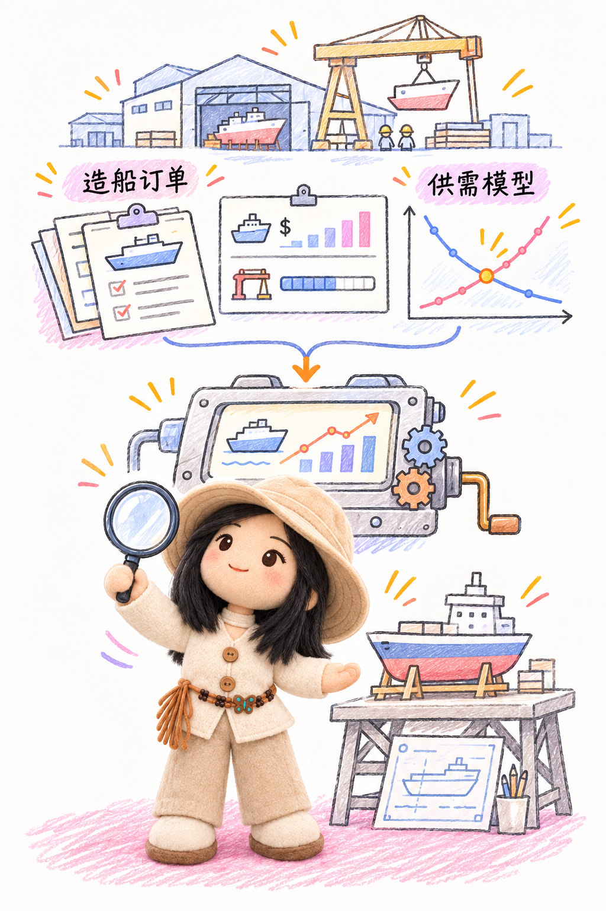

← Back跳到主要内容

广发证券
研究所机械组实习生（2023年新财富第一）
- 造船行业深度研究：分析造船行业船价、订单等10余项数据，并根据指标体系构建自下而上的定性供需模型，进一步从需求修复、供给收缩与中小船企产能的非同步复苏三个角度分析此轮由产业逻辑驱动的造船上行行情
- 协助撰写汇川技术深度复盘报告：复盘工控龙头何以凭借强大阿尔法从单一赛道冠军到平台王者，从国产替代到走向全球：对外借助新能源产业链崛起+国产替代之机，对内凭借差异化优势筑牢竞争壁垒，进一步拆分各大业务,分析其发展前景

- 汽车经销商行业深度研究：基于汽车经销商行业新车销售量价齐跌，行业进入洗牌阶段的现状，从新能源开放经销模式、竞争格局走向集中、利润结构转向售后三大角度分析其发展前景与应对方式，深度分析中升、永达 2 家龙头，独立搭建 DCF 财务估值模型，输出 40 余页行业深度报告
- 数据库搭建与监控：搭建涵盖 30+车企、50+核心指标的数据库并持续维护；运用数据透视表、VLOOKUP 函数制作包括价格走势、产销量、交强险上牌量等的月度趋势看板，输出 12 份数据周报与月报

- 非核心人群用户调研：基于营收和活跃度对大盘DAU进行12类人群划分，发现V9/11/12非核心人群（低活低营收）规模可观、但粘性较低，通过用户访谈完成促跃迁机会人群识别、防滑落摩擦点识别；利用Claude code构建AI用户招募工作流
- 巴西市场影视综扫描：测算巴西影视综时长分布与天花板，巴西已出现中长视频->短视频->短剧的时长变迁，以中国影视综时长占比为天花板，在互联网总时长稳定的假设下，其日均增量空间约14min
- 领航计划达成Agent搭建：按AB组赛道拆解，追踪领航计划两大核心目标-结算GMV和综合收入的达成进度、缺口和同比增速，并与大盘赛道整体做对比，定位问题赛道并定向追进；针对领航计划达成追踪高度依赖人工的痛点，参与领航Agent搭建，并内置“问题赛道自动识别+增速归因”的逻辑，结论直达管理层与各赛道POC，为常态化分析工作节省80%时间
- 高调性品牌挖掘：S4+品牌中未入驻商家具备可观市场空间，其中高端、奢品品牌入驻缺口更大，需构建基于站内外数据的高调性品牌识别能力，为运营团队提供精准招商线索；以玩具、鞋包类目切入，发现仅37%实现品牌精准匹配，站内外品牌匹配和高调性品牌挖掘的准确性有待通过大模型优化